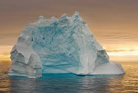
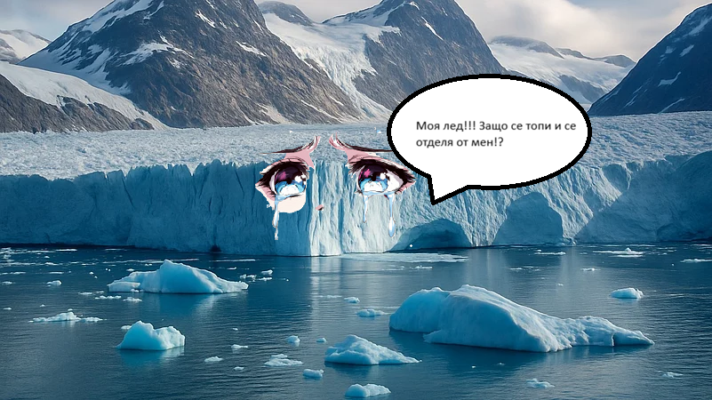
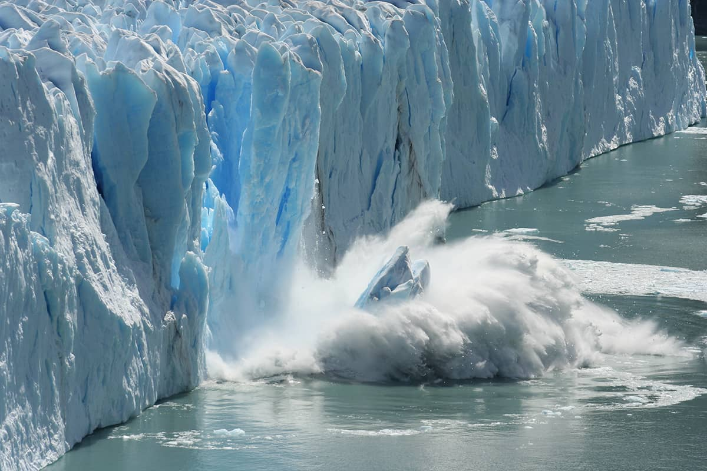
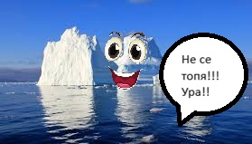
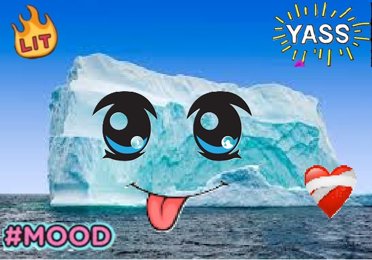

Ледниците и Световният океан са тясно свързани елементи на глобалната климатична система на Земята. Ледниците представляват огромни маси от лед, образувани в резултат на натрупване и уплътняване на сняг в продължение на хиляди години. Те се срещат най-вече в полярните области и високите планини, като съхраняват значителна част от прясната вода на планетата.

Ледниците действат като естествени „резервоари“ за прясна вода, която постепенно се освобождава и подхранва реки и екосистеми. Това е особено важно за много региони по света, които разчитат на ледниковите води за питейни нужди и земеделие. Също така, Световният океан има способността да абсорбира голяма част от топлината и въглеродния диоксид от атмосферата, което забавя темповете на климатичните промени. Това показва, че природните системи притежават механизми за саморегулация и устойчивост.

Връзката между ледниците и океана е особено важна, защото при топенето на ледниците големи количества прясна вода се вливат в океаните. Това води до покачване на морското равнище, което може да има сериозни последствия за крайбрежните райони и островните държави.Освен това, топенето на ледниците влияе и върху солеността и температурата на океанските води. Промените в тези характеристики могат да нарушат океанските течения, които разпределят топлината по Земята и оказват влияние върху климата в различни региони. Например, отслабването на определени течения може да доведе до по-студени или по-топли условия в дадени части на света.

Решаването на проблема с топенето на ледниците изисква съвместни усилия на глобално и индивидуално ниво. Основната причина за ускореното им топене е глобалното затопляне, причинено най-вече от увеличените емисии на парникови газове като въглероден диоксид и метан. Затова най-важната стъпка е намаляването на тези емисии чрез преминаване към възобновяеми енергийни източници като слънчева, вятърна и водна енергия, както и ограничаване на използването на въглища, нефт и природен газ.

Съществена роля има и повишаването на енергийната ефективност – използване на по-икономични уреди, електрически превозни средства и намаляване на ненужното потребление на енергия. Горите също са важни, защото поглъщат въглероден диоксид, затова залесяването и опазването на горските масиви допринася за забавяне на климатичните промени. Освен това международното сътрудничество е ключово. Държавите трябва да спазват климатичните споразумения и да работят заедно за ограничаване на глобалното затопляне. Научните изследвания и технологиите също могат да помогнат чрез разработване на нови методи за улавяне на въглерод и по-добро наблюдение на ледниците. На индивидуално ниво всеки човек може да допринесе чрез по-малко използване на пластмаса, рециклиране, пестене на електроенергия и вода, както и чрез избор на по-екологичен транспорт.